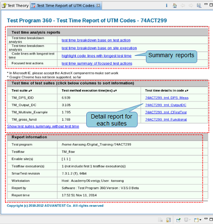

Reviewing report of Test Time Breakdown Analyzer
The following figure shows the layout of the generated test time report:

This report is divided into three parts:
- Test time analysis reports
Shows the summary report of this analysis. For more details, refer to the following sections:
- Test time of test suites
Shows the analysis result of each suite. For more details, see Test time details of code lines.
- Report information
shows general information about this analysis, such as the test program path, testflow name, and enable sites.
Functional changes
- Introduced in SmarTest 7.3.2